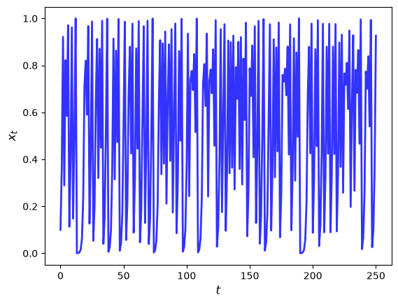
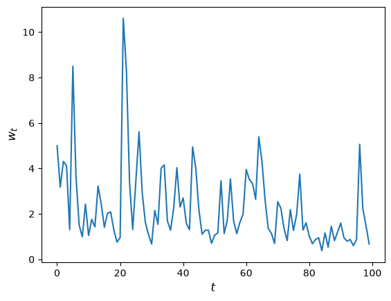
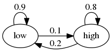
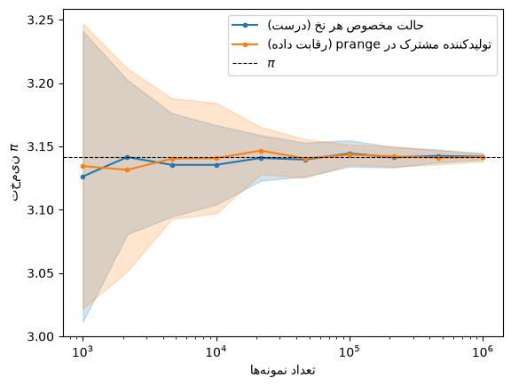

13. Numba#
علاوه بر آنچه در Anaconda موجود است، این درس به کتابخانههای زیر نیاز دارد:
!pip install quantecon
لطفاً اطمینان حاصل کنید که آخرین نسخه Anaconda را دارید، زیرا نسخههای قدیمی یک منبع رایج خطا هستند.
بیایید با چند import شروع کنیم:
import numpy as np
import quantecon as qe
import matplotlib.pyplot as plt
13.1. مروری کلی#
در یک درس قبلی درباره برداریسازی بحث کردیم، که میتواند سرعت اجرا را با ارسال دستهای عملیات پردازش آرایه به کد کارآمد سطح پایین بهبود بخشد.
با این حال، همانطور که قبلاً بحث شد، طرحهای سنتی برداریسازی چندین نقطه ضعف دارند:
بسیار حافظهبر برای عملیات ترکیبی آرایه
ناکارآمد یا غیرممکن برای برخی الگوریتمها
یک راه برای دور زدن این مشکلات، استفاده از Numba است، یک کامپایلر در زمان اجرا (JIT) برای Python.
Numba توابع را در زمان اجرا به دستورالعملهای کد ماشین بومی کامپایل میکند.
وقتی موفق میشود، نتیجه عملکردی قابل مقایسه با C یا Fortran کامپایلشده است.
علاوه بر این، Numba میتواند ترفندهای مفیدی مانند چندنخی نیز انجام دهد.
این درس ایدههای اصلی را معرفی میکند.
Note
برخی خوانندگان ممکن است کنجکاو رابطه بین Numba و Julia باشند، که کامپایلر JIT خود را دارد. در حالی که این دو کامپایلر از بسیاری جهات مشابه هستند، Numba کمتر بلندپروازانه است و تنها تلاش میکند زیرمجموعه کوچکی از زبان Python را کامپایل کند. هرچند این ممکن است یک نقص به نظر برسد، اما یک مزیت نیز هست: ماهیت محدودتر Numba استفاده از آن را آسان و در آنچه انجام میدهد کارآمد میکند.
13.2. کامپایل کردن توابع#
13.2.1. یک مثال#
بیایید مسئلهای را در نظر بگیریم که برداریسازی آن دشوار است (یعنی واگذاری آن به عملیات پردازش آرایه).
این مسئله شامل تولید مسیر از طریق نگاشت درجه دوم است:
در ادامه، \(\alpha = 4\) تعیین میکنیم.
13.2.1.1. نسخه پایه#
در اینجا نمودار یک مسیر معمولی نشان داده شده است، که از \(x_0 = 0.1\) شروع میشود، با \(t\) روی محور افقی:
def qm(x0, n, α=4.0):
x = np.empty(n+1)
x[0] = x0
for t in range(n):
x[t+1] = α * x[t] * (1 - x[t])
return x
x = qm(0.1, 250)
fig, ax = plt.subplots()
ax.plot(x, 'b-', lw=2, alpha=0.8)
ax.set_xlabel('$t$', fontsize=12)
ax.set_ylabel('$x_{t}$', fontsize = 12)
plt.show()

بیایید ببینیم برای \(n\) بزرگ، اجرای این کد چقدر زمان میبرد:
n = 10_000_000
with qe.Timer() as timer1:
# Time Python base version
x = qm(0.1, n)
3.7365 seconds elapsed
13.2.1.2. شتابدهی از طریق Numba#
برای تسریع تابع qm با استفاده از Numba، ابتدا تابع jit را وارد میکنیم:
from numba import jit
اکنون آن را روی qm اعمال میکنیم تا تابع جدیدی تولید شود:
qm_numba = jit(qm)
تابع qm_numba نسخهای از qm است که برای کامپایل JIT «هدفگذاری» شده است.
معنای این موضوع را به زودی توضیح خواهیم داد.
بیایید زمان این نسخه جدید را اندازه بگیریم:
with qe.Timer() as timer2:
# Time jitted version
x = qm_numba(0.1, n)
0.1351 seconds elapsed
این یک افزایش سرعت قابل توجه است.
در واقع، در دفعه بعد و تمام اجراهای بعدی، حتی سریعتر اجرا میشود؛ زیرا تابع کامپایل شده و در حافظه ذخیره است:
with qe.Timer() as timer3:
# Second run
x = qm_numba(0.1, n)
0.0245 seconds elapsed
در اینجا میزان افزایش سرعت نشان داده شده است:
timer1.elapsed / timer3.elapsed
152.65415972648373
این یک بهبود چشمگیر با تغییری اندک در کد اصلی ماست.
بیایید بررسی کنیم که این چگونه کار میکند.
13.2.2. چگونگی و شرایط عملکرد آن#
Numba تلاش میکند با استفاده از زیرساخت ارائهشده توسط پروژه LLVM، کد ماشین سریع تولید کند.
این کار را از طریق استنتاج اطلاعات نوع به صورت پویا انجام میدهد.
(برای بحث درباره انواع داده، به درس قبلی ما در مورد محاسبات علمی مراجعه کنید.)
ایده اصلی به این شرح است:
پایتون بسیار انعطافپذیر است و از این رو میتوان تابع qm را با انواع داده مختلفی فراخواند.
برای مثال،
x0میتواند یک آرایه NumPy یا یک لیست باشد،nمیتواند عدد صحیح یا اعشاری باشد و غیره.
این موضوع تولید کد ماشین کارآمد از پیش (یعنی قبل از زمان اجرا) را بسیار دشوار میسازد.
اما هنگامی که تابع را واقعاً فراخوانی میکنیم، مثلاً با اجرای
qm(0.5, 10)، انواعx0،αوnمشخص میشوند.علاوه بر این، انواع سایر متغیرها در
qmپس از مشخص شدن انواع ورودی قابل استنتاج هستند.پس راهبرد Numba و سایر کامپایلرهای JIT این است که تا زمان فراخوانی تابع صبر کنند و سپس آن را کامپایل کنند.
این روش «کامپایل درست به موقع» (just-in-time) نامیده میشود.
توجه داشته باشید که اگر qm_numba(0.5, 10) را فراخوانی کنید و سپس qm_numba(0.9, 20) را اجرا کنید، کامپایل فقط در اولین فراخوانی انجام میشود.
این به این دلیل است که کد کامپایلشده در حافظه نهان ذخیره میشود و در صورت نیاز مجدداً استفاده میشود.
به همین دلیل است که در کد بالا، اجرای دوم qm_numba سریعتر است.
توضیح
در عمل، به جای نوشتن qm_numba = jit(qm)، معمولاً از نحو
دکوراتور استفاده میکنیم و @jit را قبل از تعریف تابع قرار میدهیم. این
معادل افزودن qm = jit(qm) پس از تعریف است.
13.3. نکات ظریف#
استفاده از Numba نسبتاً آسان است، اما همیشه بیدردسر نیست.
بیایید برخی از مشکلاتی که کاربران با آنها مواجه میشوند را مرور کنیم.
13.3.1. تعیین نوع#
استنتاج موفق نوع، کلید کامپایل JIT است.
در یک محیط ایدهآل، Numba میتواند تمام اطلاعات نوع لازم را استنتاج کند.
زمانی که Numba نتواند تمام اطلاعات نوع را استنتاج کند، خطا صادر میکند.
برای مثال، در حالت زیر، Numba قادر به تعیین نوع تابع g هنگام کامپایل iterate نیست.
@jit
def iterate(f, x0, n):
x = x0
for t in range(n):
x = f(x)
return x
# Not jitted
def g(x):
return np.cos(x) - 2 * np.sin(x)
# This code throws an error
try:
iterate(g, 0.5, 100)
except Exception as e:
print(e)
Failed in nopython mode pipeline (step: nopython frontend)
non-precise type pyobject
During: typing of argument at /tmp/ipykernel_2839/946716698.py (1)
File "../../../../../../tmp/ipykernel_2839/946716698.py", line 1:
<source missing, REPL/exec in use?>
During: Pass nopython_type_inference
This error may have been caused by the following argument(s):
- argument 0: Cannot determine Numba type of <class 'function'>
در این حالت، میتوانیم این مشکل را بهراحتی با کامپایل کردن g برطرف کنیم.
@jit
def g(x):
return np.cos(x) - 2 * np.sin(x)
iterate(g, 0.5, 100)
2.223875299559663
در موارد دیگر، مانند زمانی که میخواهیم از توابع کتابخانههای خارجی مانند SciPy استفاده کنیم، ممکن است هیچ راهحل آسانی وجود نداشته باشد.
13.3.2. متغیرهای سراسری#
نکته دیگری که هنگام استفاده از Numba باید به آن توجه کرد، نحوه مدیریت متغیرهای سراسری است.
برای مثال، کد زیر را در نظر بگیرید.
a = 1
@jit
def add_a(x):
return a + x
print(add_a(10))
11
a = 2
print(add_a(10))
11
توجه کنید که تغییر متغیر سراسری هیچ تأثیری بر مقدار بازگرداندهشده توسط تابع نداشت 😱.
هنگامی که Numba کد ماشین را برای توابع کامپایل میکند، متغیرهای سراسری را بهعنوان ثابت در نظر میگیرد تا پایداری نوع را تضمین کند.
برای جلوگیری از این مشکل، بهجای تکیه بر متغیرهای سراسری، مقادیر را بهعنوان آرگومانهای تابع ارسال کنید.
13.4. حلقههای چندنخی در Numba#
علاوه بر کامپایل JIT، Numba پشتیبانی از محاسبات موازی در CPUها ارائه میدهد.
ابزار کلیدی برای موازیسازی در Numba تابع prange است که به Numba میگوید تا تکرارهای حلقه را به صورت موازی در هستههای CPU موجود اجرا کند.
برای نمایش، ابتدا به یک قطعه کد ساده تکنخی (یعنی غیرموازی) نگاه میکنیم.
کد، بهروزرسانی ثروت \(w_t\) یک خانوار را از طریق قانون شبیهسازی میکند
در اینجا
\(R\) نرخ بازده ناخالص داراییها است
\(s\) نرخ پسانداز خانوار است و
\(y\) درآمد کار است.
ما هر دوی \(R\) و \(y\) را به عنوان کششهای مستقل از یک توزیع لگنرمال مدلسازی میکنیم.
در اینجا کد است:
@jit
def update(w, r=0.1, s=0.3, v1=0.1, v2=1.0):
" Updates household wealth. "
# Draw shocks
R = np.exp(v1 * np.random.randn()) * (1 + r)
y = np.exp(v2 * np.random.randn())
# Update wealth
w = R * s * w + y
return w
بیایید نگاهی بیندازیم که چگونه ثروت تحت این قانون تکامل مییابد.
fig, ax = plt.subplots()
T = 100
w = np.empty(T)
w[0] = 5
for t in range(T-1):
w[t+1] = update(w[t])
ax.plot(w)
ax.set_xlabel('$t$', fontsize=12)
ax.set_ylabel('$w_{t}$', fontsize=12)
plt.show()

حالا فرض کنیم که جمعیت زیادی از خانوارها داریم و میخواهیم بدانیم میانه ثروت چه خواهد بود.
حل این موضوع با مداد و کاغذ آسان نیست، بنابراین به جای آن از شبیهسازی استفاده خواهیم کرد:
تعداد زیادی از خانوارها را در طول زمان شبیهسازی میکنیم
میانه ثروت را محاسبه میکنیم
در اینجا کد است:
@jit
def compute_long_run_median(w0=1, T=1000, num_reps=50_000):
obs = np.empty(num_reps)
# For each household
for i in range(num_reps):
# Set the initial condition and run forward in time
w = w0
for t in range(T):
w = update(w)
# Record the final value
obs[i] = w
# Take the median of all final values
return np.median(obs)
بیایید ببینیم چقدر سریع اجرا میشود:
with qe.Timer():
# Warm up
compute_long_run_median()
5.6364 seconds elapsed
with qe.Timer():
# Second run
compute_long_run_median()
4.6894 seconds elapsed
برای تسریع این، آن را از طریق چندنخی موازیسازی خواهیم کرد.
برای این کار، پرچم parallel=True را اضافه کرده و range را به prange تغییر میدهیم:
from numba import prange
@jit(parallel=True)
def compute_long_run_median_parallel(
w0=1, T=1000, num_reps=50_000
):
obs = np.empty(num_reps)
for i in prange(num_reps): # Parallelize over households
w = w0
for t in range(T):
w = update(w)
obs[i] = w
return np.median(obs)
بیایید به زمانبندی نگاه کنیم:
with qe.Timer():
# Warm up
compute_long_run_median_parallel()
1.3020 seconds elapsed
with qe.Timer():
# Second run
compute_long_run_median_parallel()
0.9620 seconds elapsed
افزایش سرعت قابل توجه است.
توجه داشته باشید که موازیسازی را در سطح خانوارها انجام میدهیم نه در طول زمان – بهروزرسانیهای یک خانوار منفرد در طول دورههای زمانی ذاتاً ترتیبی هستند.
برای موازیسازی مبتنی بر GPU، به درسهای ما درباره JAX مراجعه کنید.
13.5. تمرینها#
Exercise 13.1 و Exercise 13.3 هر دو \(\pi\) را با Monte Carlo از نمونههای تصادفی در مربع واحد تخمین میزنند.
ما آنها را اینجا تولید میکنیم و در u_draws و v_draws ذخیره میکنیم تا بتوانیم در هر دو تمرین از آنها استفاده کرده و نتایج را مقایسه کنیم.
n = 1_000_000
rng = np.random.default_rng()
u_draws = rng.uniform(size=n)
v_draws = rng.uniform(size=n)
Exercise 13.1
قبلاً در نظر گرفتیم که چگونه \(\pi\) را با Monte Carlo تقریب بزنیم.
از همان ایده اینجا استفاده کنید، اما کد را با استفاده از Numba کارآمد کنید.
سرعت را با و بدون Numba هنگامی که اندازه نمونه بزرگ است مقایسه کنید.
Solution to Exercise 13.1
در اینجا یک راهحل است:
@jit
def calculate_pi(u_draws, v_draws):
n = len(u_draws)
count = 0
for i in range(n):
u, v = u_draws[i], v_draws[i]
d = np.sqrt((u - 0.5)**2 + (v - 0.5)**2)
if d < 0.5:
count += 1
area_estimate = count / n
return area_estimate * 4 # تقسیم بر radius**2
حالا بیایید ببینیم چقدر سریع اجرا میشود:
with qe.Timer():
calculate_pi(u_draws, v_draws)
0.1258 seconds elapsed
with qe.Timer():
calculate_pi(u_draws, v_draws)
0.0007 seconds elapsed
اگر کامپایل JIT را با حذف @jit خاموش کنیم، کد به طور قابل توجهی بیشتر در دستگاه ما طول میکشد.
بنابراین با افزودن چهار کاراکتر، افزایش سرعت بزرگی به دست میآوریم.
راهحل بالا یکی از دو رویکرد طبیعی را در پیش میگیرد: ابتدا همه نقاط تصادفی را میکشد، آنها را در u_draws و v_draws ذخیره میکند و سپس اجازه میدهد تابع jit شده روی آنها حلقه بزند.
رویکرد دیگر کشیدن هر نقطه درون حلقه است.
برای انجام این کار با یک Generator NumPy، ما rng را به عنوان آرگومان عبور میدهیم و rng.uniform() را درون بدنه حلقه فراخوانی میکنیم
@jit
def calculate_pi_in_loop(rng, n):
count = 0
for i in range(n):
u, v = rng.uniform(), rng.uniform()
d = np.sqrt((u - 0.5)**2 + (v - 0.5)**2)
if d < 0.5:
count += 1
return (count / n) * 4
with qe.Timer():
calculate_pi_in_loop(rng, n)
0.1634 seconds elapsed
with qe.Timer():
calculate_pi_in_loop(rng, n)
0.0075 seconds elapsed
دو سلولی که رویکرد اول را زمانبندی میکنند فقط حلقه را اندازهگیری میکنند — نقاط تصادفی آن یکبار در بلوک راهاندازی مشترک بالا کشیده شدهاند و هرگز زمانبندی نمیشوند، در حالی که رویکرد دوم هزینه کشیدن نقاط را درون تابع زمانبندیشده میپردازد.
برای مقایسه منصفانه این دو رویکرد، ما رویکرد اول را از ابتدا تا انتها زمانبندی میکنیم، از جمله هزینه تولید آرایهها:
with qe.Timer():
u2 = rng.uniform(size=n)
v2 = rng.uniform(size=n)
calculate_pi(u2, v2)
0.0104 seconds elapsed
در این تنظیم سریال، دو رویکرد تخمینهای به همان اندازه خوب میدهند و با سرعت مشابه اجرا میشوند، اما در مصرف حافظه معادل نیستند.
رویکرد اول باید همه \(2n\) کشیدن را یکجا در حافظه نگه دارد — دو آرایه از n عدد اعشاری، یا حدود 16n بایت (حدود \(1.6\) گیگابایت وقتی n = 100_000_000).
رویکرد دوم هر نقطه را در لحظه میکشد و آن را دور میریزد، بنابراین ردپای حافظهاش با n رشد نمیکند.
این ممکن است پیشنهاد کند که کشیدن درون حلقه پیشفرض بهتری است.
اما همانطور که در Exercise 13.4 خواهیم دید، کشیدن درون حلقه با موازیسازی به بدی تعامل دارد.
Exercise 13.2
در سری سخنرانی مقدمهای بر اقتصاد کمی با Python میتوانید همه چیز درباره زنجیرههای مارکوف حالت محدود یاد بگیرید.
فعلاً، فقط روی شبیهسازی یک مثال بسیار ساده از چنین زنجیرهای تمرکز کنیم.
فرض کنید که نوسان بازده یک دارایی میتواند در یکی از دو رژیم باشد – بالا یا پایین.
احتمالات انتقال در بین حالتها به شرح زیر است

به عنوان مثال، فرض کنید طول دوره یک روز است و فرض کنید حالت فعلی بالا است.
از نمودار میبینیم که حالت فردا خواهد بود
بالا با احتمال 0.8
پایین با احتمال 0.2
وظیفه شما شبیهسازی یک دنباله از حالتهای نوسان روزانه طبق این قانون است.
طول دنباله را n = 1_000_000 تنظیم کنید و در حالت بالا شروع کنید.
یک نسخه Python خالص و یک نسخه Numba پیادهسازی کنید و سرعتها را مقایسه کنید.
برای آزمایش کد خود، کسری از زمان که زنجیر در حالت پایین میگذراند را ارزیابی کنید.
اگر کد شما صحیح باشد، باید حدود 2/3 باشد.
Hint
حالت پایین را به عنوان 0 و حالت بالا را به عنوان 1 نمایش دهید.
اگر میخواهید اعداد صحیح را در یک آرایه NumPy ذخیره کنید و سپس کامپایل JIT اعمال کنید، از
x = np.empty(n, dtype=np.int64)استفاده کنید.
Solution to Exercise 13.2
ما قرار میدهیم
0 نشاندهنده “پایین”
1 نشاندهنده “بالا”
p, q = 0.1, 0.2 # احتمال خروج از حالت پایین و بالا به ترتیب
در اینجا نسخه Python خالص تابع است
n = 1_000_000
rng = np.random.default_rng()
U = rng.uniform(0, 1, size=n)
def compute_series(n, U):
x = np.empty(n, dtype=np.int64)
x[0] = 1 # در حالت 1 شروع کن
for t in range(1, n):
current_x = x[t-1]
if current_x == 0:
x[t] = U[t] < p
else:
x[t] = U[t] > q
return x
بیایید این کد را اجرا کنیم و بررسی کنیم که کسری از زمان صرف شده در حالت پایین حدود 0.666 است
x = compute_series(n, U)
print(np.mean(x == 0)) # کسری از زمان که x در حالت 0 است
0.666646
این (تقریباً) خروجی صحیح است.
حالا بیایید زمان آن را بگیریم:
with qe.Timer():
compute_series(n, U)
0.4237 seconds elapsed
بعد بیایید یک نسخه Numba پیادهسازی کنیم که آسان است
compute_series_numba = jit(compute_series)
بیایید بررسی کنیم که هنوز اعداد صحیح دریافت میکنیم
x = compute_series_numba(n, U)
print(np.mean(x == 0))
0.666646
بیایید زمان را ببینیم
with qe.Timer():
compute_series_numba(n, U)
0.0037 seconds elapsed
این بهبود سرعت خوبی برای یک خط کد است!
Exercise 13.3
در یک تمرین قبلی، از Numba برای تسریع تلاشی برای محاسبه ثابت \(\pi\) با Monte Carlo استفاده کردیم.
اکنون سعی کنید موازیسازی را اضافه کنید و ببینید آیا افزایش سرعت بیشتری به دست میآورید.
در اینجا وظایف مستقل زیادی وجود دارد (کشیدن یک نقطه و آزمایش اینکه آیا در دایره قرار میگیرد)، اما هر کدام زمان اجرای بسیار کمی دارد.
به طور کلی، موازیسازی زمانی کمتر موثر است که وظایف فردی نسبت به سربارهای توزیع آنها در چندین CPU بسیار کوچک باشند.
راهحل این مشکل این است که به هر نخ کار کافی بدهیم تا آن سربارها ارزش پرداخت داشته باشند.
پس، برای اندازه شبیهسازی Monte Carlo، از چیزی قابل توجه استفاده کنید، مانند n = 100_000_000.
در این مقیاس، و با سختافزار مناسب، باید افزایش قابل توجهی نسبت به نسخه سریال ببینید.
Solution to Exercise 13.3
در اینجا یک راهحل است:
@jit(parallel=True)
def calculate_pi_parallel(u_draws, v_draws):
n = len(u_draws)
count = 0
for i in prange(n):
u, v = u_draws[i], v_draws[i]
d = np.sqrt((u - 0.5)**2 + (v - 0.5)**2)
if d < 0.5:
count += 1
area_estimate = count / n
return area_estimate * 4 # تقسیم بر radius**2
موازیسازی زمانی سودمند است که هر نخ کار کافی برای غلبه بر هزینههای سربار داشته باشد، در حالی که مسئله را به بخشهایی تقسیم میکند تا کار به طور همزمان اتفاق بیفتد.
بیایید مجموعه جدید و بسیار بزرگتری از نقاط را بکشیم به جای استفاده مجدد از آرایههای بالا.
Note
دو آرایه زیر حدود 1.6 گیگابایت حافظه اشغال میکنند — اگر دستگاه شما حافظه رم کافی ندارد، n را کاهش دهید.
n = 100_000_000
rng = np.random.default_rng()
u_big = rng.uniform(size=n)
v_big = rng.uniform(size=n)
حالا بیایید ببینیم چقدر سریع اجرا میشود (فراخوانی دوم زمان اجرا را بدون زمان کامپایل اندازهگیری میکند):
with qe.Timer():
calculate_pi_parallel(u_big, v_big)
0.3824 seconds elapsed
with qe.Timer():
calculate_pi_parallel(u_big, v_big)
0.0413 seconds elapsed
برای مقایسه، در اینجا نسخه سریال jit شده از Exercise 13.1 روی همان نقاط است:
with qe.Timer():
calculate_pi(u_big, v_big)
0.0721 seconds elapsed
با مقایسه دو زمانبندی آخر، چندنخی افزایش سرعت قابل توجهی علاوه بر کامپایل JIT فراهم میکند.
(اگر به صورت محلی اجرا میکنید، نتایج متفاوتی خواهید گرفت که عمدتاً به تعداد CPUها در دستگاه شما بستگی دارد — و در اندازههای نمونه کوچک، نسخه موازی میتواند حتی کندتر باشد، زیرا سودها نمیتوانند هزینه توزیع کار میان نخها را پوشش دهند.)
این دو آرایه بزرگ هستند و کار ما با آنها تمام شده است، پس حافظه را قبل از ادامه دادن آزاد میکنیم.
del u_big, v_big
توجه کنید که ما همه نقاط تصادفی را قبل از حلقه کشیدیم و آنها را به صورت آرایه عبور دادیم، بنابراین حلقه موازی فقط از حافظه میخواند.
کشیدن نقاط درون حلقه موازی به جای این کار به طرز شگفتانگیزی حساس است.
ما بررسی میکنیم چرا اینطور است، و چگونه میتوان آن را با ایمنی انجام داد، در Exercise 13.4.
Exercise 13.4
در Exercise 13.3 ما همه نقاط تصادفی را قبل از حلقه موازی کشیدیم.
وسوسهانگیز است که به جای آن هر نقطه را درون حلقه prange بکشیم، با عبور دادن یک rng تولیدکننده به عنوان آرگومان و فراخوانی rng.uniform() در بدنه حلقه.
آن را امتحان کنید: کد باید اجرا شود و عددی نزدیک به \(\pi\) برگرداند، با این حال یک اشکال ظریف در این رویکرد وجود دارد.
به این صورت بررسی کنید:
تابع خود را چند بار با همان seed فراخوانی کنید و بررسی کنید آیا نتیجه تکرارپذیر است.
تخمین را بارها در طیفی از اندازههای نمونه تکرار کنید و پراکندگی آن را با یک نسخه موازی درست مقایسه کنید.
سپس توضیح دهید چه چیزی اشتباه پیش میرود و راهی درست برای کشیدن درون یک حلقه موازی ارائه دهید.
راهنمایی: سعی کنید از یک تابع تصادفی قدیمی مانند np.random.uniform() به جای یک Generator استفاده کنید و ببینید چه اتفاقی میافتد.
Solution to Exercise 13.4
در اینجا نسخه وسوسهانگیز است.
ما rng را به عنوان آرگومان عبور میدهیم و آن را درون حلقه prange فراخوانی میکنیم.
n = 1_000_000
rng = np.random.default_rng()
@jit(parallel=True)
def calculate_pi_in_loop_parallel(rng, n):
count = 0
for i in prange(n):
u, v = rng.uniform(), rng.uniform()
d = np.sqrt((u - 0.5)**2 + (v - 0.5)**2)
if d < 0.5:
count += 1
return (count / n) * 4
calculate_pi_in_loop_parallel(rng, n)
3.140808
کد بدون خطا اجرا میشود و چیزی نزدیک به \(\pi\) برمیگرداند.
اما چیزی به طور خاموش با نتایج اشتباه است.
در اینجا، هر نخ از همان تولیدکننده rng میکشد.
یک تولیدکننده هر عدد را با بهروزرسانی یک حالت داخلی تولید میکند.
تحت prange، بسیاری از نخها آن یک حالت مشترک را به طور همزمان میخوانند و بهروز میکنند، بدون هیچ هماهنگی بین آنها.
این یک رقابت داده (data race) است.
این همبستگیهایی بین کشیدنها ایجاد میکند و حتی میتواند باعث شود برخی کشیدنها به طور غیرقابلپیشبینی تکرار شوند.
دو نشانه این مشکل را آشکار میکند.
نشانه ۱: نتیجه دیگر تکرارپذیر نیست.
یک تولیدکننده درست هر بار که همان seed به آن داده شود، همان پاسخ را برمیگرداند.
به دلیل رقابت داده، ترتیبی که نخها به طور اتفاقی به حالت مشترک دست میزنند بر جریان کشیدنها تأثیر میگذارد، بنابراین پاسخ حتی وقتی seed ثابت است تکرارپذیر نیست.
for seed in (1, 1, 1):
print(calculate_pi_in_loop_parallel(np.random.default_rng(seed), n))
3.142292
3.14366
3.142408
هر فراخوانی از همان seed استفاده میکند، با این حال پاسخها متفاوت هستند.
نشانه ۲: تخمینگر بسیار پر نویزتر از آن است که باید باشد.
کشیدنهای تکراری و همبسته اطلاعات کمتری نسبت به \(n\) کشیدن مستقل حمل میکنند، بنابراین اندازه نمونه مؤثر بسیار کوچکتر از \(n\) است.
راهحل این است که به هر نخ حالت تصادفی خاص خودش را بدهیم، کاری که توابع قدیمی NumPy مانند np.random.uniform() به طور خودکار تحت Numba انجام میدهند.
@jit(parallel=True)
def calculate_pi_legacy(n):
count = 0
for i in prange(n):
u, v = np.random.uniform(0, 1), np.random.uniform(0, 1)
d = np.sqrt((u - 0.5)**2 + (v - 0.5)**2)
if d < 0.5:
count += 1
return (count / n) * 4
برای دیدن هزینه این رقابت، هر تخمین را بارها تکرار میکنیم و پراکندگی آن را در برابر نسخه درست با افزایش اندازه نمونه رسم میکنیم.
sample_sizes = np.logspace(3, 6, 10).astype(int)
num_reps = 20
methods = [("حالت مخصوص هر نخ (درست)",
lambda n: calculate_pi_legacy(n), 'C0'),
("تولیدکننده مشترک در prange (رقابت داده)",
lambda n: calculate_pi_in_loop_parallel(np.random.default_rng(), n), 'C1')]
fig, ax = plt.subplots()
for label, estimate, color in methods:
draws = np.array([[estimate(int(m)) for _ in range(num_reps)]
for m in sample_sizes])
means, stds = draws.mean(axis=1), draws.std(axis=1)
ax.plot(sample_sizes, means, color=color, marker='o', ms=3, label=label)
ax.fill_between(sample_sizes, means - 2 * stds, means + 2 * stds,
color=color, alpha=0.2)
ax.axhline(np.pi, color='k', lw=0.8, ls='--', label=r'$\pi$')
ax.set_xscale('log')
ax.set_xlabel('تعداد نمونهها')
ax.set_ylabel(r'تخمین $\pi$')
ax.legend()
plt.show()

هر دو نوار حول \(\pi\) متمرکز هستند، اما نوار مرتبط با رقابت داده پهنتر از نوار دیگر است و به آرامی با افزایش اندازه نمونه باریک میشود.
گزینه ایمن دیگر همان است که در Exercise 13.3 بود: نقاط را قبل از حلقه بکشید تا حلقه موازی فقط از حافظه بخواند.
Exercise 13.5
اکنون دو راه درست برای تخمین \(\pi\) به صورت موازی داریم.
یکی همه نقاط را قبل از حلقه میکشد، مانند Exercise 13.3.
دیگری آنها را درون حلقه با توابع قدیمی میکشد، مانند Exercise 13.4.
سرعت آنها را در n = 100_000_000 مقایسه کنید، از جمله زمان صرفشده برای تولید نقاط تصادفی.
Solution to Exercise 13.5
ما هر رویکرد را از ابتدا تا انتها زمانبندی میکنیم، بنابراین نسخه پیشکشیدن هزینه ساخت آرایههای خود را میپردازد.
n = 100_000_000
rng = np.random.default_rng()
with qe.Timer():
u_draws = rng.uniform(size=n)
v_draws = rng.uniform(size=n)
calculate_pi_parallel(u_draws, v_draws)
0.8816 seconds elapsed
with qe.Timer():
calculate_pi_legacy(n)
0.4925 seconds elapsed
کشیدن درون حلقه بسیار سریعتر است.
نسخه پیشکشیدن دو آرایه خود را روی یک نخ واحد قبل از شروع حلقه تولید میکند.
نسخه درون حلقه در عوض تولید اعداد تصادفی را در همه نخها پخش میکند.
همچنین از تخصیص دو آرایه از n عدد اجتناب میکند، بنابراین هم زمان و هم حافظه صرفهجویی میکند.
Exercise 13.6
در درس ما درباره SciPy، قیمتگذاری یک اختیار خرید را در تنظیمی که قیمت سهام پایه یک توزیع ساده و شناخته شده داشت بحث کردیم.
در اینجا یک تنظیم واقعیتر را بحث میکنیم.
یادآوری میکنیم که قیمت اختیار از قانون زیر پیروی میکند
که در آن
\(\beta\) یک فاکتور تنزیل است،
\(n\) تاریخ انقضا است،
\(K\) قیمت اعمال است و
\(\{S_t\}\) قیمت دارایی پایه در هر زمان \(t\) است.
فرض کنید که n, β, K = 20, 0.99, 100.
فرض کنید که قیمت سهام از قانون زیر پیروی میکند
که در آن
در اینجا \(\{\xi_t\}\) و \(\{\eta_t\}\) IID و نرمال استاندارد هستند.
(این یک مدل نوسان تصادفی است، که در آن نوسان \(\sigma_t\) در طول زمان تغییر میکند.)
از مقادیر پیشفرض μ, ρ, ν, S0, h0 = 0.0001, 0.1, 0.001, 10, 0 استفاده کنید.
(در اینجا S0 همان \(S_0\) و h0 همان \(h_0\) است.)
با تولید \(M\) مسیر \(s_0, \ldots, s_n\)، تخمین Monte Carlo را محاسبه کنید
از قیمت، با اعمال Numba و موازیسازی.
Solution to Exercise 13.6
با \(s_t := \ln S_t\)، پویایی قیمت به شکل زیر میشود
با استفاده از این واقعیت، راهحل را میتوان به شرح زیر نوشت.
Note
در اینجا ما کشیدنهای تصادفی را درون حلقه داخلی نگه میداریم و از API قدیمی
np.random.randn() به جای یک Generator استفاده میکنیم.
این به این دلیل است که پشتیبانی Numba از اشیاء Generator تحت اجرای موازی
(@jit(parallel=True)) ایمن در برابر نخ (thread-safe) نیست.
پیشکشیدن شوکها در آرایههایی با شکل (M, n) از این مشکل اجتناب میکند اما در اینجا غیرعملی است، زیرا M = 10_000_000 به چندین گیگابایت حافظه نیاز خواهد داشت.
M = 10_000_000
n, β, K = 20, 0.99, 100
μ, ρ, ν, S0, h0 = 0.0001, 0.1, 0.001, 10, 0
@jit(parallel=True)
def compute_call_price_parallel(β=β,
μ=μ,
S0=S0,
h0=h0,
K=K,
n=n,
ρ=ρ,
ν=ν,
M=M):
current_sum = 0.0
# برای هر مسیر نمونه
for m in prange(M):
s = np.log(S0)
h = h0
# شبیهسازی رو به جلو در زمان
for t in range(n):
s = s + μ + np.exp(h) * np.random.randn()
h = ρ * h + ν * np.random.randn()
# و مقدار max{S_n - K, 0} را به current_sum اضافه کن
current_sum += max(np.exp(s) - K, 0)
return β**n * current_sum / M
سعی کنید بین parallel=True و parallel=False جابجا شوید و زمان اجرا را یادداشت کنید.
اگر روی دستگاهی با CPUهای زیاد هستید، تفاوت باید قابل توجه باشد.